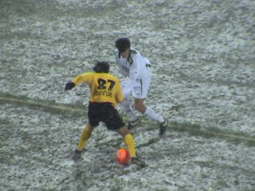

|
Roda JC - FC Groningen (1-3) 30 december 2005
|

De Roda-mobiel van de Brigata Fanatica.
Respect voor het handjevol afgereisde Groningers. Jammer van dat etsende
spandoek (links).
Priscilla was een van de introducees vanavond; een aanwinst voor Z16 ;-)
"Leise rieselt der Schnee"... in een halfleeg stadion zorgden de westsiders
nog voor enige sfeer met sterretjes en confettikanonnen.
Na geknoei in de defensie van Groningen komt Oper vrij voor Roorda.
De Est scoort 1-0, (11').
Roda domineerde de eerste helft en het wachten was op een tweede treffer.
Alleen uit corners zoals hier stichtten de Groningers gevaar.
De aangeslagen Cissé wordt al snel vervangen door Cristiano.

Na enkele goede kansen voor Roda kreeg Groningen meer vat op het spel,
mede door de wissels van Fledderus voor Floren en Van de Laak voor de
tegenvallende topscorer Cornelisse.
Hier een duel van Bodor met wederom een oranje bal vanwege de
aanhoudende sneeuwval.
Vrije trap Buijs.
1-1, (71'). Hij maakte ook het winnende doelpunt in de uitwedstrijd.
De vechtlust van Groningen wordt beloond. Fledderus scoort 1-2, (82').
Even later is het Gronings feestje compleet als Nevland 1-3 scoort, (88').

Berry uit Herkenbosch is trots op zijn geile sjaal.
De kater van de nederlaag werd weggewerkt met veel bier en een blunt.
Het was nog redelijk gezellig in het home. Afknapper was dat geen enkele
speler van Roda kwam opdagen.
Maar onze oud-tapjuf Yvonne was er weer eens bij.
Roda heeft de aansluiting bij de middenmoot
vanavond verloren en hoeft
zich met het oog op het loodzware programma weinig illussies meer te
maken op een plaats voor de play-offs.
© Koempels Pleasure Dome
|